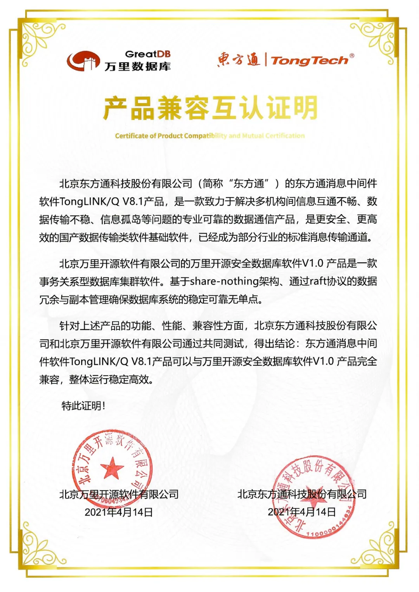
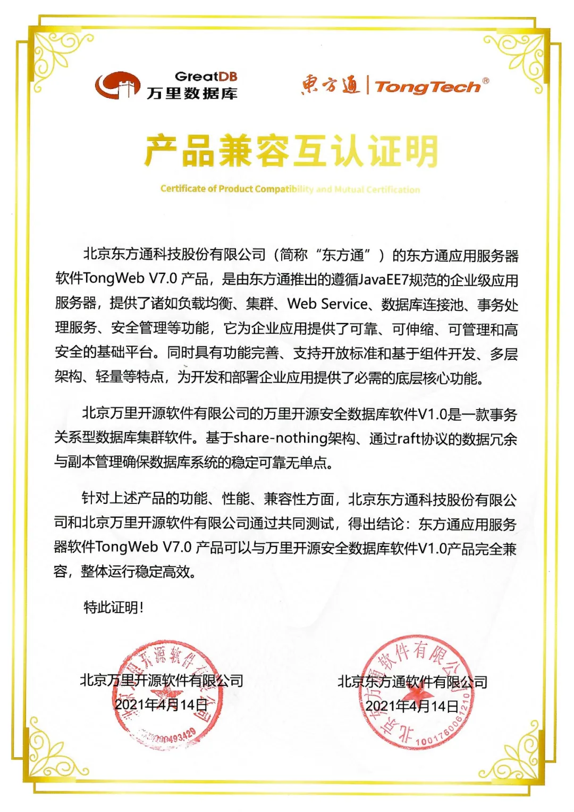

生态 | 万里安全数据库与东方通中间件及服务器完成兼容互认证！
点击蓝字
★
NEWS
★
关注我们
推动兼容认证测试，完善国产生态建设。
近日，万里数据库就公司的安全数据库软件与东方通的消息中间件、应用服务器两款软件产品完成了兼容性测试，结论表明：万里安全数据库完全兼容东方通消息中间件TongLINK/Q V8.1与应用服务器软件TongWeb V7.0两款产品，整体运行稳定高效。

图
兼容认证证书

万里数据库致力于数据库研发20余年，专注于研发自主可控的分布式数据库超过10年。其中，万里安全数据库是公司打造的一款核心事务关系型数据库集群软件，具有动态扩展、数据强一致、集群高可用等优势特性，全面兼容主流的国产软硬件平台。它基于share-nothing架构，通过raft协议的数据冗余与副本管理确保数据库系统的稳定可靠无单点。
东方通是国内领先的大安全及行业信息化产品、解决方案提供商，公司打造的消息中间件软件TongLINK/Q V8.1是一款致力于解决多机构间信息互通不畅、数据传输不稳、信息孤岛等问题的专业可靠的数据通信产品，是更安全、更高效的国产数据传输类基础软件，现已成为部分行业的标准信息传输通道。
应用服务器软件TongWeb V7.0是东方通遵循JaveEE7规范推出的企业级应用服务器，提供诸如负载均衡、集群、Web Service、数据库连接池、事务处理服务、安全管理等功能，为企业应用提供了可靠、可伸缩、可管理和高安全的基础平台，同时具有功能完善、支持开放标准和基于组件开发、多层架构、轻量等特点，为开发和部署企业应用提供了必需的底层核心功能。
分割线
万里数据库和东方通作为知名的数据库软件提供商和领先的中间件软件厂商，同为国产软硬件生态链上的重要一环。此次双方完成兼容互认证，为后续的项目合作、技术共享、互利共赢打下了技术基础，也为完善国产软硬件生态再添砝码。
后续，双方将在优势业务领域积极寻求合作，集中优势资源和人力物力，为推动构建安全可控、体系架构开放的新一代国产基础软硬件体系全力以赴！
推荐阅读1.生态 | 万里数据库完美兼容广电运通服务器 助力金融科技更美好！
2. 生态 | 万里数据库与麒麟软件达成战略合作 开启生态共荣新篇章！
3. 生态 | 万里数据库与电科云系列产品完成兼容互认证


扫码二维码
关注公众号